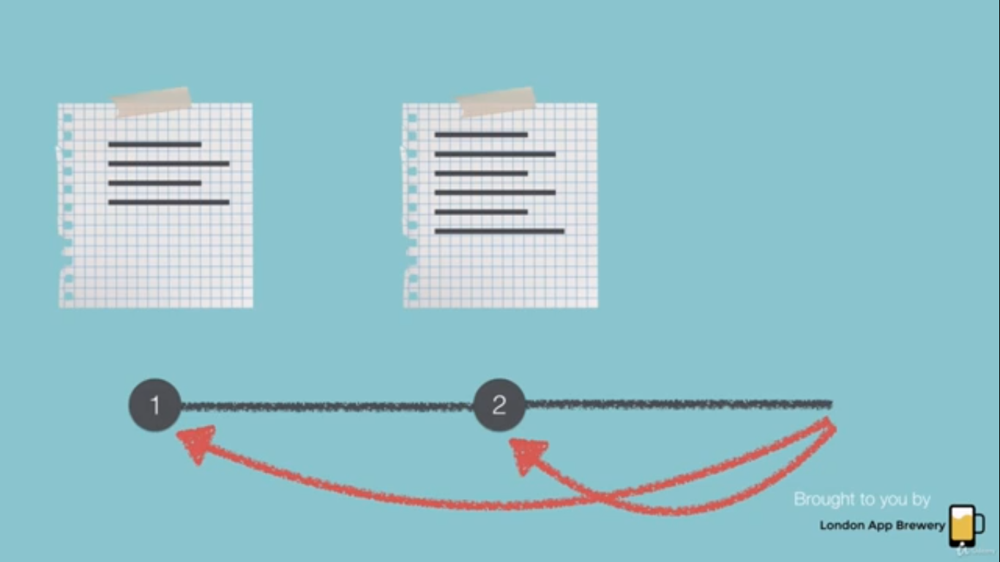

<!-- Introduction to Version Control and Git -->


<!-- to check hdden files -->
ls -a;

<!-- git must br initialized globally -->
1.git init
2.git config --global user.name "someone" our real github acc username and email
3.git config --global user.email "someone@someplace.com"
4.git add *
5.git commit -m "some init msg"

<!-- Version Control Using Git and the Command Line -->
 1.git init == to initialize git;
 2.git status == to cheeck status
 3.git add filename == to add it to git version ctrl
 3.1 git add . = to all all files in dir
 4.git commit -m "complte filename" = to add this to versionn ctrl
5.git log = to check the log

<!-- Do some changes -->
6.git diff filename = to check the differnce
7.git checkout filename = to rollback to old version

<!-- GitHub and Remote Repositories -->
1.create repo in github.com
2.copy url

3.git remote add origin url;
4.git push -u origin master

<!-- GitHub Private Repos are now Free! ?
 -->

 <!-- Gitignore --> = to stop upload our secret files
 new folder;
 new files;

 1.git init;
 2.git add .; all files added
 3.git rm --cached -r .;  = to remove all commited files;
 4. we just have to add files in .gitignore which fil should not have to upload
 5. git add .;
 6.git commit -m "initial commit";

 <!-- Cloning -->
 in working directory;
 1.giit clone url;